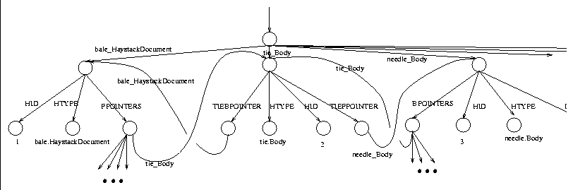

There are a number of ways in which we can represent the HDM inside the OEM model. A simple variation is provided here. It is sufficiently expressive and concise to efficiently described the HDM graph inside the Lore OEM model.
Figure  is a small OEM representation of a
bale.HaystackDocument connected to a needle.Body by
means of a tie.Body object. Although the figure looks
unnecessarily complex, it is in fact a very compact representation.
is a small OEM representation of a
bale.HaystackDocument connected to a needle.Body by
means of a tie.Body object. Although the figure looks
unnecessarily complex, it is in fact a very compact representation.

Figure: An OEM diagram for a small portion of an HDM cluster
The Lore OEM structure created for Haystack starts with a single
pointer into a complex object. The label for this pointer is
Haystack . The generated OEM file begins
with: `` < Haystack::Haystack {'' and ends with:
``} > ''.
. The generated OEM file begins
with: `` < Haystack::Haystack {'' and ends with:
``} > ''.
Because the period character has significance in Lore files, the OEMStrawType for any Straw is modified to use the ``_'' character. For example, bale.HaystackDocument becomes bale_HaystackDocument. The HaystackID corresponds to the Straw's ID, and BackPointerIDn and ForwardPointerIDn correspond to the HaystackID of the nth back and forward pointers held within the Straw's StrawTies.
The first line of the code creates two pointers to a complex object.
The first pointer is the globally named pointer
``IDHaystackID'' (i.e. ID followed by the
Straw's HaystackID value). The second pointer
emanates from the Haystack complex OEM object (see
Figure ) and is labeled with the type of the object.
From this complex node we draw four additional pointers: HID
which connects to an atomic object holding the HaystackID for the
Straw. The HTYPE label points at a node holding the type of
the Straw. The two pointers FPOINTERS and
BPOINTERS are created if there are any backward or forward
pointers emanating from the Straw. These objects are complex
and point at other named Straw objects in the OEM graph.
When creating the OEM data for a Tie, two additional lines
are added to the Straw definition in Figure
(in the space for additional information):
< TIEBPOINTER &IDTieBackPointerID >
< TIEFPOINTER &IDTieForwardPointerID >
TieBackPointerID corresponds to the HaystackID of the back pointer of the Tie (i.e what is obtained by calling getBack()). TieForwardPointerID is the same thing in the forward direction.
For a Needle we add the following to the Straw OEM code:
< DATA needleData >
The needleData field simply corresponds to the data held by the Needle. If the data held by a Needle is a String, the needleData is encapsulated in a quotation marks (so that Lore knows the data is a string). If the data is some number, it does not need to be enapsulated in quotes.
The Straw class in Haystack implements the basic
functionality that generates the code specified in . To
obtain the OEM representation of a Straw, the
generateOEM() method is called on the Straw. The
Tie class extends the code generated by Straw and adds the
appropriate fields specific to objects in the tie package (i.e.
TIEBPOINTER and TIEFPOINTER). Similarly, The
Needle class extends the code generated by Straw by adding
the correct DATA information. By default the data is assumed
to be text. Specific Needles can override the code
generation method to produce an OEM field of the appropriate type (for
example, a needle.Date will produce an integer DATA
field).